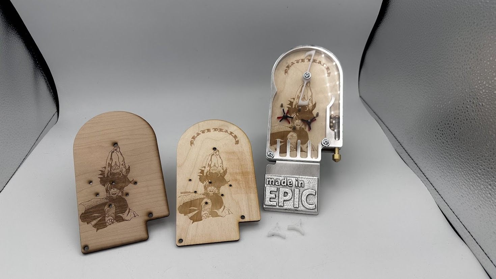
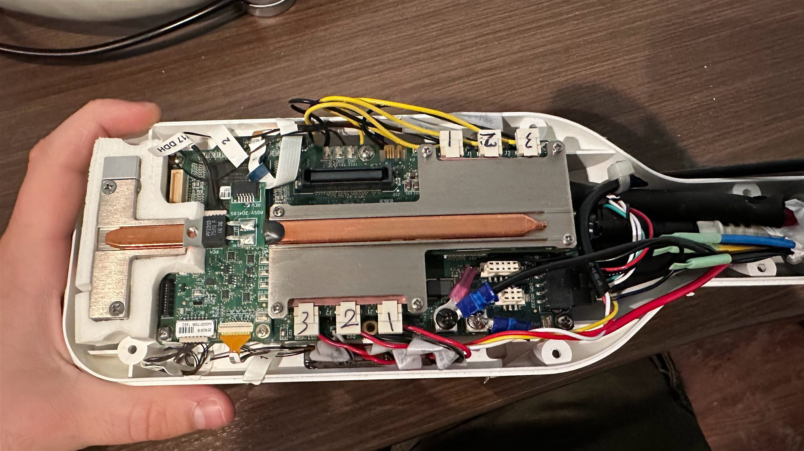
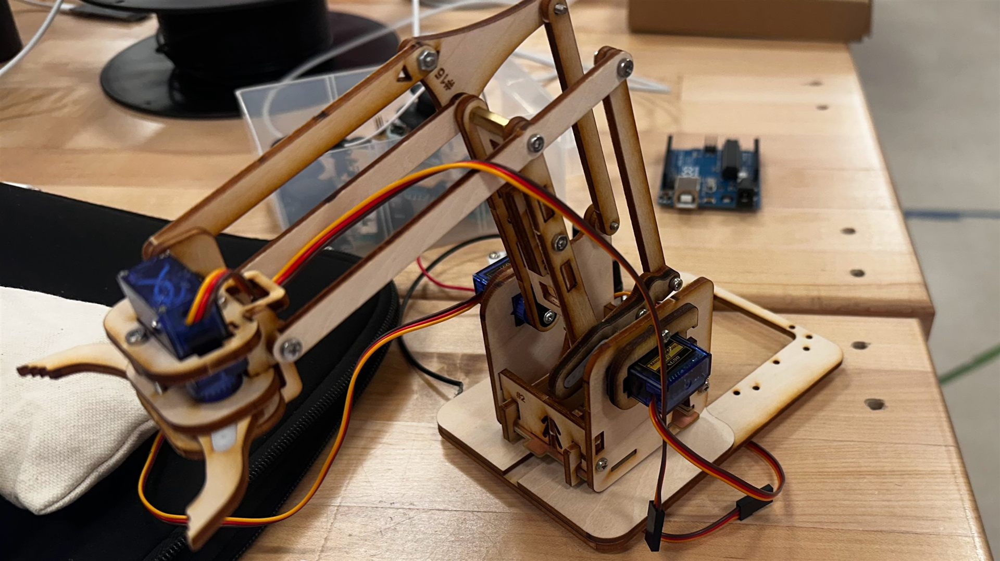
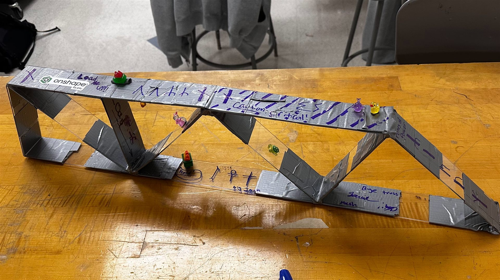

I'm Gavin, an M.S. student in Robotics & Autonomous Systems at Boston University and Vice President of the BU Robotics Club. I came to engineering from anthropology: studying how people have always solved problems with the tools around them led me to want to build those solutions myself. I've worked on WWII aircraft restoration, retrofitted legacy medical hardware with modern microcontrollers, and designed parts for manufacturing. Problems require solutions, but solutions require people to create them.

Design & Fabrication · BU LEAP Life
Designed and fabricated parts for a fully functioning mechanical pinball machine using CAD and fabrication equipment such as a manual lathe, laser cutter, CNC mill, and manual drill press.
Onshape
CNC Milling
Laser Cutting
Manual Lathe

Reverse Engineering & Embedded Systems · The Warbird Factory
Integrated STM microcontroller boards into legacy medical equipment hardware, performing chip removal, soldering, and serial encoder implementation to retrofit the system.
STM32
Soldering
CAD
Prototyping
Robotics · Personal Project
Built a 6-axis robotic arm based on the open-source ARCTOS project, applying hands-on mechanical assembly, electronics integration, and embedded systems knowledge.
Robotic Arm
Stepper Motors
Embedded Systems
3D Printing

Teaching · BU Robotics Club
Established and led a workshop centered on a laser cut 4-axis mechanical arm with positional servos, controllable via a servo testing board for manual operation and an Arduino for programmed control.
Arduino
Servo Motors
Laser Cutting
Teaching

TODO: category · context
TODO: one-sentence summary of the truss project.
Onshape
TODO
Project Engineer Intern — Martin Electric
Feb 2025 – July 2025 · Rensselaer, NY
- Diagnosed, troubleshot, repaired, and operated a plasma CNC machine to support manufacturing and fabrication processes.
- Designed a junction box in Autodesk Fusion and generated a Bill of Materials to address space organizational requirements for the electrical field team.
- Designed a storage rack for electrical transformers in Autodesk Fusion, collaborating with the project manager and fabrication specialist to select materials and optimize the design for manufacturability and function.
Engineering Intern — The Warbird Factory
March 2024 – Feb 2025 · Latham, NY
- Integrated STM microcontroller boards into medical equipment hardware, performing chip removal, soldering, and serial encoder implementation to retrofit legacy systems.
- Designed a CAD bracket tray enabling efficient integration of 3 STM boards within a constrained space.
- Coordinated with third-party software developers to integrate updated code into existing hardware.
- Developed simplified design solutions for EV charging stations, reducing part count and complexity to improve ease of manufacturing and assembly while cutting material costs by 33%.
- Performed precision machining alongside mechanics to repair and fabricate custom parts for WWII aircraft, ensuring strict adherence to technical specifications.
- Supported upgrades to vintage aircraft to comply with current FAA regulations, balancing modern safety standards with preservation of historical integrity.
Archaeological Field Technician — Hartgen Archeology
Aug 2023 – March 2024 · Rensselaer, NY
- Coordinated with the public and construction teams to complete archaeological excavations on deadline, minimizing project disruptions while recovering artifacts with precision.
GIS Research Assistant (TODO: confirm title) — St. Lawrence University — Dr. Shinu Anna Abraham
TODO: dates · Canton, NY
- Learned QGIS and produced five maps published as supplementary figures in “Recent Developments in the Archaeology of Long-Distance Connections Across the Ancient Indian Ocean,” Annual Review of Anthropology, vol. 52, pp. 115–135 (2023). DOI · Maps
Electronics & Embedded Systems
Arduino Raspberry Pi STM boards Soldering Servo/Stepper Motors
CAD Software
Autodesk Fusion 360 AutoCAD SolidWorks Onshape
Prototyping & Manufacturing
3D Printing Laser Cutting Plasma Cutting CNC Mill Drill Press Manual Lathe